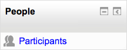

The People block on a course is enabled by Turning Editing On, activating the Add A Block menu and from it selecting People.
The People Block contains a link to the list of participants associated with that Moodle course area in various roles.
The participants’ profiles are available by clicking on their name or picture. It’s possible that some participants may be uncomfortable with that (or that staff may be uncomfortable on their behalf). As well as emphasising the benefits of social presence, it may reassure them to know that, if they prefer, they can configure their profiles to hide their email address.
The list of participants can be sorted by first name, surname, city, country and last access. There is a pull-down menu which can filter the list for a specific role (for example Tutors or Students).
